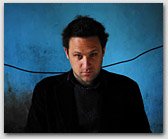
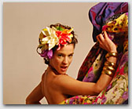
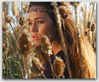
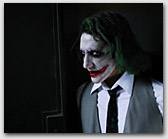
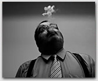

|
|
Nació en octubre de 1978. Cursó Ciencias de la Comunicación. Estudió con Roberto Mignani, Alberto Goldenstein, Actualmente realiza el taller de Juan Travnik. Realizó tareas de cámara, dirección y producción para distintos cortos universitarios, y cursos de marketing, artes, comunicación y tecnologías.
Trabajo Personal: en el 2005 trabajó sobre errores de videojuegos y lo denominó píxel, bajo la curaduría de Victoria Sacco.
Expuso en La Alianza Francesa de Bs As una serie de retratos a cineastas que realizó en su mayoría para la revista Haciendo Cine, el mismo trabajo estuvo en Francia y en México en dos oportunidades.
Actualmente trabaja sobre diapositivas familiares propias que han sido deterioradas por un incendio, humedad y el paso del tiempo/abandono.
Edita además un proyecto a una beca grupal del Fondo Nacional de las Artes en conjunto a escritores y fotógrafos (Florencia Abbate, Oliverio Coelho,Alina Schwartz, Adrián Salgueiro, Nacho Sánchez entre otros)
Trabajo Editorial: en el 2004 comenzó a trabajar como fotógrafo en la revista Gamma. Desde el 2005 formó parte estable del staff de la revista Haciendo Cine, realizando editoriales y sus tapas. A partir del 2006 su trabajo editorial se publica simultáneamente en las revistas Haciendo Cine, Los Inrockuptibles ,Playboy, El Gourmet, FTV, El planeta Urbano, entre otras colaboraciones. Ha sido publicado en Argentina, Chile, Alemania, Holanda, Venezuela, Colombia y Grecia.
Sitio oficial de Luis Sens




volver (-) |